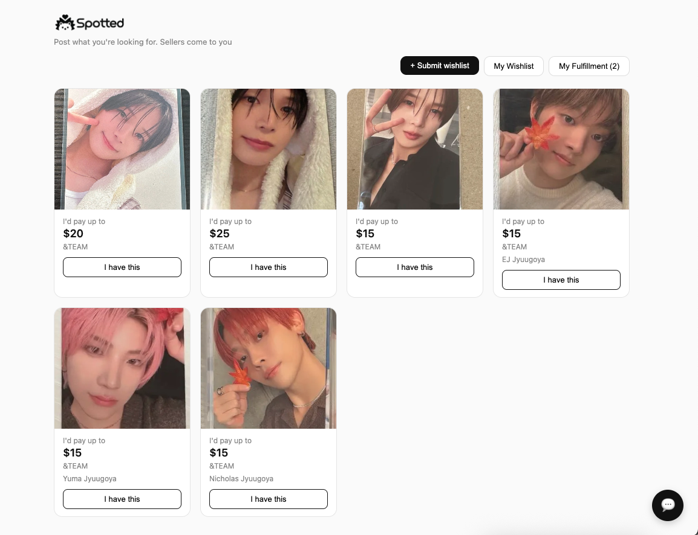
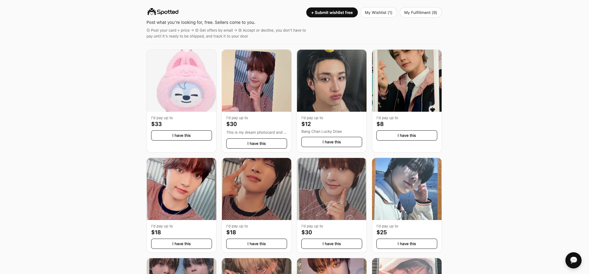
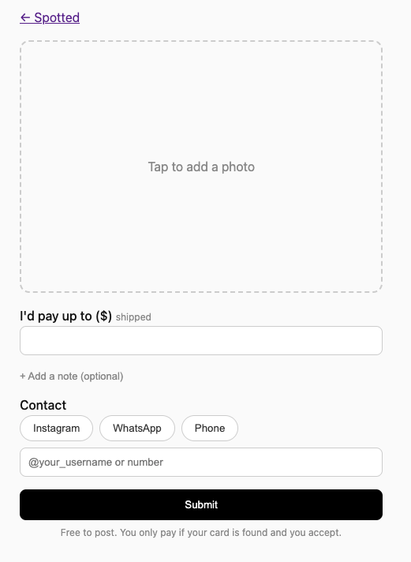
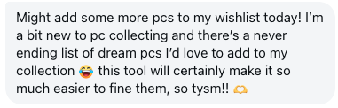

01 · Background
I entered the transaction before defining the product.
During my first two months running a cross-border K-pop collectibles business, I learned that the market was fragmented at every layer: item identity, naming, pricing, discovery, and transaction channels.
My first instinct was to build infrastructure: standardize each photocard as an entity, collect transaction prices, and help collectors identify listings scattered across marketplaces.
Discogs
A community-maintained catalog of standardized releases and versions.
TCGplayer
A structured catalog connecting transactions with price tracking.
StockX
Standardized products, market pricing, and transaction mechanics.
K-pop releases move too fast.
Versions, preorder benefits, and regional exclusives multiply quickly. Building a complete database before knowing what carries real demand would be expensive and slow.
The infrastructure opportunity may be real. It was not the fastest way to create value on day one.
02 · Contextual research
I did not ask for “pain points.” I asked what happened last time.
In the first round, I used eight real Mercari buyer conversations to reconstruct how collectors last discovered, searched for, priced, and purchased a photocard. After Spotted launched, I rotated one short research question into the shipping window and invited five buyers into deeper conversations.
Discovery and transaction happen in different places.
Five buyers discovered cards through Twitter, TikTok, friends, or seller accounts. Mercari was used more often to monitor cards they already knew.
Item identity depends on insider knowledge.
“I didn’t even know what it was called.” Collectors often rely on images and informed friends rather than standardized names.
Collectors build their own tracking systems.
Spreadsheet templates, saved searches, and repeated checking are all forms of demand tracking that existing tools only partially support.
“Cannot find it” and “cannot afford it” are different.
Some buyers wait for supply to appear; others wait for price conditions to change. A useful request must express both the item and the price condition.
The current journey
03 · Competitive landscape
Collectors can record what they want. The harder problem is moving “unavailable” toward a real transaction.
I analyzed competitors by user job rather than by logo. Social platforms drive discovery. Marketplaces transact available listings. Collection trackers help users record what they own and want. When no listing exists, sourcing, pricing, and cross-border fulfillment still require substantial manual work.
Bias Room matters most. It combines a large database, image recognition, collection and wishlist tools, social features, and a marketplace. As of July 2026, its public pages showed roughly 453,000 cards, 100,000+ marketplace listings, and 10,000+ Google Play downloads. Its speed and breadth demonstrate that collection management can be a powerful acquisition wedge—and that structured demand is not an uncontested space.
Bias Room also built the entity layer and price tracking I originally considered too heavy. That does not invalidate my sequencing decision. At its current breadth and data scale, it is not infrastructure I could realistically outbuild as a solo founder at the MVP stage. I chose a different battlefield: active sourcing, pricing, and fulfillment, where I could use existing customer trust and supply-chain capabilities.
| Solution | Discover | Identify | Monitor | Structured demand | Transaction / fulfillment |
|---|---|---|---|---|---|
| Twitter / TikTok / Discord | Strong | Partial | Weak | Unstructured | Weak |
| Mercari / eBay | Weak | Seller naming | Strong | Saved search | Strong |
| Bias Room | Strong | Image recognition + database | Wishlist + price tracking | Strong | Buy / sell / trade listings |
| Spreadsheet / template | — | User-maintained | Manual | Strong | — |
| Proxy service | — | Weak | Partial | — | Cross-border access |
| Spotted wedge | Image input | Built from real requests | Active sourcing + offer | Price-qualified | Manual matching + fulfillment |
04 · MVP scope
Move one real request from upload to completed fulfillment.
A buyer uploads a request, it appears on a public board, and I manually source, price, and fulfill it. Automated matching, integrated payments, a native app, and a complete database all came later.
Use friends to find usability problems; use target users to validate behavior.
Friends completed moderated end-to-end usability tests to verify that the mobile flow was understandable and functional. Demand validation was reserved for collectors who had previously asked me to find specific cards.
From displaying demand to explaining the transaction.


Reduce four fields to two.
V0 · Collect more information
V1 · Minimum demand expression
Group name added little information to a manually fulfilled workflow, so I removed it. The open note field made users stop and compose an answer, so I moved it behind an optional disclosure: the core request needs only a photo and ideal price, while unusual versions still have space for context.
Ask for registration after intent.
Enter request → Submit → Register and publish
Complete the motivated task first, then explain the account as a way to save and track the request.
I have this → Offer → Register and submit
Let a potential seller confirm the request and price intention before paying the account-creation cost.

05 · Trusted rollout
Once inside the product, users expressed more demand than they had in DMs.
I invited three collectors who had previously asked me to find cards and had a real Instagram relationship with me. Two completed an upload, submitting two and eleven requests respectively—more than either had previously expressed in DMs.
This provides early support for the wishlist-first hypothesis: self-service input may reduce the social cost of asking a seller for multiple favors and help collectors externalize more demand at once. It remains a warm-started pilot—not evidence of cold-user activation or long-term retention.

From upload to accepted offer.
For the nine requests I could source, every offer came in below the buyer’s stated target price, and all nine were accepted. In this sample, ideal price helped distinguish actionable demand from a general wish.
Spotted uses pay on arrival: after a buyer accepts an offer, I complete the cross-border purchase and collect payment when the item reaches the United States. These users had previously completed transactions with me through the same model, so 9/9 represents clear purchase intent grounded in existing trust. Fulfillment status remains separately tracked.
06 · Behavioral patterns
The same “I can’t find it” produces four different behaviors.
The second interview round and field observation showed that these are not fixed personas. They are responses to search failure, and the same collector may move between them for different cards.
Cannot find it, so stop looking.
No effective workaround. This behavior is the most direct fit for Spotted.
Turn repeated checking into a habit.
Urgency is lower; Spotted must be clearly easier than continuing to refresh marketplaces.
Desire exists, but the price does not work.
Timing and price conditions matter. A wishlist cannot be treated as an order.
Complete a series over time.
Supported by interview evidence and in-store observation of collectors checking templates; potentially higher-frequency usage.
07 · Mental model
No click on “Accept” did not mean no desire.
Three early users did not accept an offer in the product. Follow-up showed that they believed entering a target price had already placed an order. Spotted’s actual model was non-binding demand first, followed by a final decision after an item was found.
I rewrote the price input, submission copy, and reminder emails around “You get the final say.” Publishing a wishlist was not a purchase commitment; the buyer still decided after receiving an offer. The problem was not one button. It was the mental model of the entire transaction.
08 · Measurement design
Do not rush into a dashboard. Make the core loop queryable first.
Manual follow-up can explain why, but it cannot reliably reconstruct where every request stopped. I defined a minimal North Star funnel and used database timestamps for business-state transitions instead of creating a parallel event system that could disagree with reality.
page_viewlanding page loaded with attributionMicrosoft Clarity page viewwishlist_startedfirst meaningful form actionminimal front-end eventwishlist_submittedrequest successfully publisheddatabase timestampoffer_madeseller submits an offerdatabase timestampoffer_acceptedbuyer confirms the offerdatabase timestampfulfillment_completedbuyer marks as receiveddatabase timestampWishlist and match identifiers connect every lifecycle state, allowing SQL to calculate request match rate, offer acceptance, time to first offer, and time to fulfillment. Microsoft Clarity remains a tool for session replay and qualitative diagnosis; it is not the source of truth for business state.
09 · What comes next
Move from founder-led proxy buying to a repeatable marketplace.
The current evidence supports real demand and purchase intent, but it is grounded in existing trust and founder-led sourcing. Mercari also lacks a low-friction clickable path off-platform. The next stage is not to keep proving that collectors occasionally fail to find a card. It is to shift toward persistent channels such as Instagram and test whether acquisition, supply, transactions, and economics can become less dependent on my relationships and manual work.
Will cold users submit qualified requests?
Find a repeatable path through Instagram, TikTok, and collector communities while separating channel friction from product friction.
Can other suppliers make the offer?
Test whether suppliers can discover demand, quote competitively, and participate in fulfillment without founder-led sourcing.
Can demand complete the full loop?
Measure conversion and time between page view, request start, submission, offer, acceptance, and completed fulfillment.
Does each fulfillment create positive value?
Put acquisition, sourcing, payment, logistics, support, and labor into one contribution-margin definition.
Does one success create the next?
Test whether successful fulfillment increases another request, offer acceptance, or referral from the same collector.
Core semester validationFind at least one repeatable cold-user acquisition path and have non-founder suppliers quote and fulfill a meaningful share of qualified requests.
I did not start with a grand marketplace.
I started with a behavior users already had—but no product owned.
How I moved from observed behavior in cross-border resale, abandoned the initial “complete database first” idea, and used a wishlist to test the smallest entry point into a fragmented collectibles market.